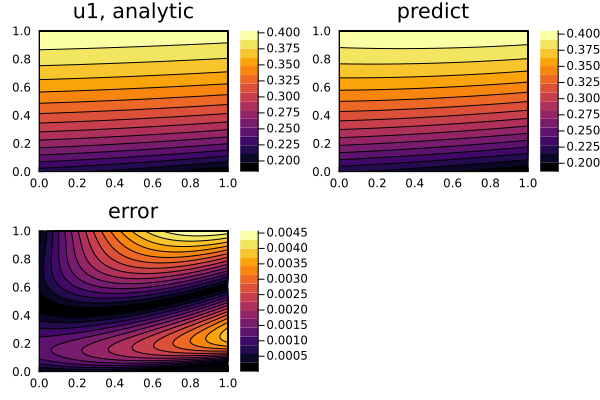
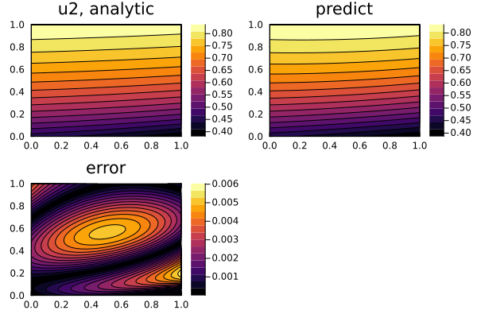

Nonlinear hyperbolic system of PDEs
We may also solve hyperbolic systems like the following
\[\begin{aligned} \frac{\partial^2u}{\partial t^2} &= \frac{a}{x^n} \frac{\partial}{\partial x}(x^n \frac{\partial u}{\partial x}) + u f(\frac{u}{w}) \\ \frac{\partial^2w}{\partial t^2} &= \frac{b}{x^n} \frac{\partial}{\partial x}(x^n \frac{\partial u}{\partial x}) + w g(\frac{u}{w}) \\ \end{aligned}\]
where f and g are arbitrary functions. With initial and boundary conditions:
\[\begin{aligned} u(0,x) &= k * [j_0(ξ(0, x)) + y_0(ξ(0, x))] \\ u(t,0) &= k * [j_0(ξ(t, 0)) + y_0(ξ(t, 0))] \\ u(t,1) &= k * [j_0(ξ(t, 1)) + y_0(ξ(t, 1))] \\ w(0,x) &= j_0(ξ(0, x)) + y_0(ξ(0, x)) \\ w(t,0) &= j_0(ξ(t, 0)) + y_0(ξ(t, 0)) \\ w(t,1) &= j_0(ξ(t, 0)) + y_0(ξ(t, 0)) \\ \end{aligned}\]
where $k$ is a root of the algebraic (transcendental) equation $f(k) = g(k)$, $j_0$ and $y_0$ are the Bessel functions, and $ξ(t, x)$ is:
\[\begin{aligned} \frac{\sqrt[]{f(k)}}{\sqrt[]{\frac{a}{x^n}}}\sqrt[]{\frac{a}{x^n}(t+1)^2 - (x+1)^2} \end{aligned}\]
We solve this with Neural:
using NeuralPDE, Lux, ModelingToolkit, Optimization, OptimizationOptimJL, Roots,
LineSearches
using SpecialFunctions
using Plots
using DomainSets: Interval
using IntervalSets: leftendpoint, rightendpoint
@parameters t, x
@variables u(..), w(..)
Dx = Differential(x)
Dt = Differential(t)
Dtt = Differential(t)^2
# Constants
a = 16
b = 16
n = 0
# Arbitrary functions
f(x) = x^2
g(x) = 4 * cos(π * x)
root(x) = g(x) - f(x)
# Analytic solution
k = find_zero(root, (0, 1), Roots.Bisection()) # k is a root of the algebraic (transcendental) equation f(x) = g(x)
ξ(t, x) = sqrt(f(k)) / sqrt(a) * sqrt(a * (t + 1)^2 - (x + 1)^2)
θ(t, x) = besselj0(ξ(t, x)) + bessely0(ξ(t, x)) # Analytical solution to Klein-Gordon equation
w_analytic(t, x) = θ(t, x)
u_analytic(t, x) = k * θ(t, x)
# Nonlinear system of hyperbolic equations
eqs = [Dtt(u(t, x)) ~ a / (x^n) * Dx(x^n * Dx(u(t, x))) + u(t, x) * f(u(t, x) / w(t, x)),
Dtt(w(t, x)) ~ b / (x^n) * Dx(x^n * Dx(w(t, x))) + w(t, x) * g(u(t, x) / w(t, x))]
# Boundary conditions
bcs = [u(0, x) ~ u_analytic(0, x),
w(0, x) ~ w_analytic(0, x),
u(t, 0) ~ u_analytic(t, 0),
w(t, 0) ~ w_analytic(t, 0),
u(t, 1) ~ u_analytic(t, 1),
w(t, 1) ~ w_analytic(t, 1)]
# Space and time domains
domains = [t ∈ Interval(0.0, 1.0),
x ∈ Interval(0.0, 1.0)]
# Neural network
input_ = length(domains)
n = 15
chain = [Chain(Dense(input_, n, σ), Dense(n, n, σ), Dense(n, 1)) for _ in 1:2]
strategy = QuadratureTraining()
discretization = PhysicsInformedNN(chain, strategy)
@named pdesystem = PDESystem(eqs, bcs, domains, [t, x], [u(t, x), w(t, x)])
prob = discretize(pdesystem, discretization)
sym_prob = symbolic_discretize(pdesystem, discretization)
pde_inner_loss_functions = sym_prob.loss_functions.pde_loss_functions
bcs_inner_loss_functions = sym_prob.loss_functions.bc_loss_functions
callback = function (p, l)
println("loss: ", l)
println("pde_losses: ", map(l_ -> l_(p.u), pde_inner_loss_functions))
println("bcs_losses: ", map(l_ -> l_(p.u), bcs_inner_loss_functions))
return false
end
res = Optimization.solve(prob, BFGS(linesearch = BackTracking()); maxiters = 200, callback)
phi = discretization.phi
# Analysis
ts, xs = [leftendpoint(d.domain):0.01:rightendpoint(d.domain) for d in domains]
depvars = [:u, :w]
minimizers_ = [res.u.depvar[depvars[i]] for i in 1:length(chain)]
analytic_sol_func(t, x) = [u_analytic(t, x), w_analytic(t, x)]
u_real = [[analytic_sol_func(t, x)[i] for t in ts for x in xs] for i in 1:2]
u_predict = [[phi[i]([t, x], minimizers_[i])[1] for t in ts for x in xs] for i in 1:2]
diff_u = [abs.(u_real[i] .- u_predict[i]) for i in 1:2]
ps = []
for i in 1:2
p1 = plot(ts, xs, u_real[i], linetype = :contourf, title = "u$i, analytic")
p2 = plot(ts, xs, u_predict[i], linetype = :contourf, title = "predict")
p3 = plot(ts, xs, diff_u[i], linetype = :contourf, title = "error")
push!(ps, plot(p1, p2, p3))
endloss: 44.18193540272127
pde_losses: [39.303473249323986, 0.7345196005703054]
bcs_losses: [0.6082255690867204, 0.35894327772588963, 0.8135484656821607, 0.7178150176553018, 0.8799366219551612, 0.7654736007217434]
loss: 7.573844238452043
pde_losses: [0.02337338713294831, 0.6560297208920118]
bcs_losses: [0.2518349377887783, 1.4915162466463674, 0.39517898386525824, 2.116349031479724, 0.43169769728722107, 2.2078642333597345]
loss: 7.4354118617201514
pde_losses: [0.027864330406965898, 0.19790383797140004]
bcs_losses: [0.2947742326068006, 1.5401151031009628, 0.4476271850453586, 2.1728127315557484, 0.48797305468161234, 2.266341386351304]
loss: 4.933639641434781
pde_losses: [0.015188002803257014, 0.25970907025464407]
bcs_losses: [0.1191819334034509, 0.9265236119081992, 0.26292610308881376, 1.5214596689510378, 0.2510068475667955, 1.577644403458582]
loss: 2.787287087037753
pde_losses: [0.15312839609738785, 2.0833424380689856]
bcs_losses: [0.02054167570434923, 0.00677996593804302, 0.1243426937866623, 0.16681646980158893, 0.09187115964600627, 0.14046428799472996]
loss: 1.792695476789706
pde_losses: [0.14985778197616537, 1.0484519716405558]
bcs_losses: [0.02867893822775809, 0.00800083962710128, 0.1430593011686944, 0.17033981824553096, 0.10824751313310321, 0.13605931277079708]
loss: 1.120697507443622
pde_losses: [0.14566607121841527, 0.2802092610688613]
bcs_losses: [0.04508529946546634, 0.01125277057855251, 0.17642799146438948, 0.18270211179192664, 0.13805101984214047, 0.14130298201387004]
loss: 0.7839284813217092
pde_losses: [0.049797166936214346, 0.052702291577365015]
bcs_losses: [0.07315824019808212, 0.0028853408241223647, 0.20442208445557283, 0.1409106278392264, 0.1666195396309177, 0.09343318986020849]
loss: 0.6335754439830951
pde_losses: [0.022446334739708678, 0.056438140309193016]
bcs_losses: [0.06705476625569534, 0.003596437321553687, 0.18292147559736593, 0.09796612475831888, 0.1507561622202182, 0.052396002781041284]
loss: 0.5931275975416709
pde_losses: [0.01858030435541553, 0.04957539702142281]
bcs_losses: [0.06369225530191676, 0.005784626268534087, 0.175086486408892, 0.09091583357871934, 0.14515348162495226, 0.04433921298181808]
loss: 0.5349985160418816
pde_losses: [0.012497787157720437, 0.053976002052684796]
bcs_losses: [0.05395038735442378, 0.009065404350636456, 0.15628624377684264, 0.08374330700083764, 0.1293602067273668, 0.03611917762136905]
loss: 0.4933728797093528
pde_losses: [0.00751317884103414, 0.06725149679453664]
bcs_losses: [0.045121475757061956, 0.011152608166245102, 0.13867392472304105, 0.07825909508565597, 0.11377900606994855, 0.03162209427182937]
loss: 0.4542813011946394
pde_losses: [0.0034419743997987184, 0.08156743985249489]
bcs_losses: [0.0363343036094757, 0.012541214940378517, 0.11997252575627855, 0.07438747754887337, 0.09757876272462562, 0.02845760236271405]
loss: 0.4296351583228248
pde_losses: [0.0018552167460915347, 0.08956002070325758]
bcs_losses: [0.031598106641306446, 0.014428840570787348, 0.10964140340079806, 0.06819089243978663, 0.08880936750320617, 0.025551310317591006]
loss: 0.3877426316512764
pde_losses: [0.0005922267909847108, 0.0906047777335937]
bcs_losses: [0.025594276965143763, 0.01869151274646866, 0.0963731227975984, 0.05714801889567366, 0.07778205262875769, 0.020956643093055817]
loss: 0.3078661970118107
pde_losses: [0.0005883391056022985, 0.0798061443772949]
bcs_losses: [0.015595721997843075, 0.032709569761242716, 0.0734652509241587, 0.03248886740873364, 0.05862075809911094, 0.014591545337824481]
loss: 0.225186985785587
pde_losses: [0.003565306164201245, 0.049028900873011226]
bcs_losses: [0.00344797942280638, 0.07074984800276535, 0.039914149624693335, 0.009458626813274917, 0.029711389548599892, 0.01931078533623461]
loss: 0.1833441400063946
pde_losses: [0.004614497253082752, 0.03453502740502643]
bcs_losses: [0.0007607278348143251, 0.07100286904775133, 0.026619942655270165, 0.008369840479462473, 0.018708183219423524, 0.018733052111563616]
loss: 0.14908030098298747
pde_losses: [0.004131985835321704, 0.03229583487039831]
bcs_losses: [0.00023025736098614458, 0.060402406756826045, 0.01803620983586786, 0.007486904321254579, 0.012291498449187525, 0.014205203553145298]
loss: 0.0663130594956842
pde_losses: [0.001039421783978474, 0.009424139632897658]
bcs_losses: [0.00025947454045746393, 0.01581054542151811, 0.01332256224912393, 0.006598364451218887, 0.009957835068831085, 0.009900716347658585]
loss: 0.05260806284859603
pde_losses: [0.0005399412662374499, 0.004532894553108336]
bcs_losses: [0.0004480910428691925, 0.012419367473515344, 0.010627403135943842, 0.004796100908816026, 0.008230493079252641, 0.0110137713888532]
loss: 0.04408842857959918
pde_losses: [0.0004731057543620435, 0.00232998112750284]
bcs_losses: [0.000997701072969565, 0.010947821440094567, 0.007853077065476681, 0.003623432385035127, 0.006286116127538545, 0.01157719360661981]
loss: 0.0373020184717082
pde_losses: [0.002628764874850996, 0.0033160309797347744]
bcs_losses: [0.003100314220875649, 0.00690701658801827, 0.003404449551563178, 0.00210637269443821, 0.0034386451871590037, 0.012400424375068112]
loss: 0.03272706186274966
pde_losses: [0.0015623006407507257, 0.0010404909373581]
bcs_losses: [0.0029979412287133218, 0.00891447867362405, 0.0037871849144191947, 0.002199537026189285, 0.003585572812266973, 0.008639555629428012]
loss: 0.030478596945482453
pde_losses: [0.0012632321024056003, 0.0017656865527727868]
bcs_losses: [0.0024234738071643577, 0.0070876866042117155, 0.004156203438984433, 0.001674283390360964, 0.003809404527186463, 0.008298626522396133]
loss: 0.024463353047207634
pde_losses: [0.0011304113373154872, 0.0033661661875021695]
bcs_losses: [0.0021452126742379386, 0.0035758915414286743, 0.003553798104697041, 0.0008893490420120671, 0.003104463857202128, 0.006698060302812128]
loss: 0.018310431326517416
pde_losses: [0.003481466000977417, 0.003531508079543008]
bcs_losses: [0.0013293365803360123, 0.0008656887947270334, 0.0024893235368493583, 0.001250597064985795, 0.0017270959337714546, 0.003635415335327338]
loss: 0.016097671184535596
pde_losses: [0.0030427646003575023, 0.002632913821028831]
bcs_losses: [0.001004692291675647, 0.0010778766252839153, 0.0023379447996142704, 0.0014518318605230666, 0.0016587560600960153, 0.00289089112595635]
loss: 0.014138244319796942
pde_losses: [0.002358635174993572, 0.002475110412299104]
bcs_losses: [0.0008853145396850332, 0.0011964522525974523, 0.0019509824531387862, 0.0014175733438128125, 0.0015285610164212289, 0.0023256151268489533]
loss: 0.010387368721769527
pde_losses: [0.0016526428404804578, 0.001944277931158913]
bcs_losses: [0.0006040033270363759, 0.0010285182871186327, 0.0012196252015920098, 0.0018494429227673271, 0.0011684793655426795, 0.0009203788460731313]
loss: 0.006863698078731401
pde_losses: [0.001502845584039318, 0.001190185599790228]
bcs_losses: [0.00011240378326142973, 0.00012574381812091058, 0.000855508921041023, 0.0013969113305035928, 0.0009672441914474531, 0.0007128548505274451]
loss: 0.005965667161005871
pde_losses: [0.0014302726096179586, 0.0010540245623794572]
bcs_losses: [0.00015534850300250418, 0.00010421773269787248, 0.0006644772250376368, 0.0011401031188877136, 0.0007267174615287447, 0.0006905059478539836]
loss: 0.0055181758543149835
pde_losses: [0.0010862382523290093, 0.0011495644697433777]
bcs_losses: [8.947333888794352e-5, 0.00021021189156909397, 0.0008871654474978754, 0.0006758320857671774, 0.0008706248995963174, 0.0005490654689241886]
loss: 0.004872670237564871
pde_losses: [0.0009616691130007001, 0.0006329456722576398]
bcs_losses: [7.545299137609365e-5, 0.00027051202282708055, 0.000848800362082993, 0.0006537252021350026, 0.0008860739349664637, 0.0005434909389188983]
loss: 0.00448968008720989
pde_losses: [0.0008365321962080613, 0.0005621951395802474]
bcs_losses: [0.00010468239363950203, 0.0003255023272150419, 0.0006426322621259604, 0.0007037543350427296, 0.0007179035121274083, 0.0005964779212709393]
loss: 0.004002908740312231
pde_losses: [0.0005641864729636481, 0.0006479176144475188]
bcs_losses: [0.00011601817567336725, 0.0004020419623458435, 0.0004981537394332554, 0.0005946321731551217, 0.0005839485356599692, 0.0005960100666335071]
loss: 0.003455208485770081
pde_losses: [0.00027134181175388577, 0.0007976088683219979]
bcs_losses: [0.00017543460924671414, 0.0004335999151720785, 0.00035900903748731493, 0.000505269737666087, 0.0004473772895907777, 0.0004655672165312248]
loss: 0.0032863303044192264
pde_losses: [0.00021492769289958006, 0.0008798257035252411]
bcs_losses: [0.00021283436244796093, 0.00038126790663480485, 0.0002933620309007318, 0.00048735911379212284, 0.00038819264967655933, 0.00042856084454222557]
loss: 0.003155323626271824
pde_losses: [0.00017025929458325075, 0.0009729288292691403]
bcs_losses: [0.00026012190159320714, 0.00031851594884889996, 0.0002348646887565939, 0.00045390714873023644, 0.000342319602606372, 0.00040240621188412386]
loss: 0.002991123129551109
pde_losses: [0.00012791638337046358, 0.0009780710888050313]
bcs_losses: [0.00028250427426112937, 0.00024157918062866511, 0.00019850075431096054, 0.0004245318800595347, 0.0003250443902276749, 0.00041297517788764943]
loss: 0.002779139683506391
pde_losses: [9.427148213590088e-5, 0.0008614430123242376]
bcs_losses: [0.00028994201610431624, 0.00018219393101637677, 0.00016877544703877568, 0.0004020213986259905, 0.0003217608084633698, 0.00045873158779742356]
loss: 0.002523983849824823
pde_losses: [0.00010201674345655434, 0.0006040945119108497]
bcs_losses: [0.00023296970078255929, 0.000145847099657471, 0.0001648714860165639, 0.00041360566218472204, 0.00035375683643246506, 0.0005068218093836377]
loss: 0.002324859323539378
pde_losses: [0.0001763422136628676, 0.0003722501956632099]
bcs_losses: [0.00018416203893627725, 0.0001646441241478385, 0.00015966619752987493, 0.00040837642650556275, 0.0003741789306760936, 0.00048523919641765357]
loss: 0.002255859944204344
pde_losses: [0.00023012211254941933, 0.00024644493905990374]
bcs_losses: [0.00011208493884416356, 0.00019728573155867215, 0.00019842846598710682, 0.00039607972849137093, 0.0004328741858156444, 0.0004425398418980631]
loss: 0.0022085924705952343
pde_losses: [0.0002553315714127453, 0.00024111118680182]
bcs_losses: [0.0001142856220752123, 0.00022598073440835865, 0.00018616793085988748, 0.0003696451913570773, 0.0003990200333212716, 0.00041705020035886196]
loss: 0.002189818442209597
pde_losses: [0.00023159493981926604, 0.0002495484332550293]
bcs_losses: [0.00011730741534759115, 0.00022965608133779445, 0.00018869002911420062, 0.00036425654537989427, 0.00039494811198263166, 0.0004138168859731893]
loss: 0.002139363594936813
pde_losses: [0.0001903549261197845, 0.00029184251200113144]
bcs_losses: [0.00011853990725138754, 0.00022774684600364572, 0.00018179574901289088, 0.0003567626767349936, 0.0003672781654275229, 0.0004050428123854564]
loss: 0.0020708804317625114
pde_losses: [0.0001522799552997647, 0.0003214770126417391]
bcs_losses: [0.000123991498410531, 0.0002260679709097096, 0.00016965462677042087, 0.0003394212574786244, 0.000343806150127018, 0.00039418196012470377]
loss: 0.0019213400768094244
pde_losses: [0.00011464077076645511, 0.0003787974583960625]
bcs_losses: [0.0001260678918966256, 0.0002192103783399802, 0.00012910634661655984, 0.0003057974790751095, 0.0002800830402626799, 0.00036763671145595173]
loss: 0.001753008491771853
pde_losses: [8.034867943595358e-5, 0.00038196932231873704]
bcs_losses: [0.00013839051217987513, 0.0002079820360826389, 9.965586174494856e-5, 0.0002517067543898635, 0.00023863340223853705, 0.00035432192338129937]
loss: 0.0016303268514898223
pde_losses: [7.368093289819489e-5, 0.0003557358770590684]
bcs_losses: [0.00013046729737729198, 0.00019130286862725424, 9.344788984694193e-5, 0.00021167096889683, 0.00021623102727473718, 0.00035778998950950375]
loss: 0.0015690535499771805
pde_losses: [7.231585969266675e-5, 0.00028424533207900636]
bcs_losses: [0.00010398676193690688, 0.00016769740527138982, 9.318260728449171e-5, 0.00019993742794260414, 0.00025341254530003853, 0.0003942756104700762]
loss: 0.0015458486671927761
pde_losses: [8.017143406352623e-5, 0.0002668210436749956]
bcs_losses: [9.423423216173991e-5, 0.000154087668803643, 9.793014142635176e-5, 0.0001980813334533392, 0.00025073795697117197, 0.0004037848566380085]
loss: 0.001525314648494433
pde_losses: [8.292590789233563e-5, 0.00024378510722787317]
bcs_losses: [8.394611474789761e-5, 0.00015910700674505362, 9.948148929359765e-5, 0.00020032699615970748, 0.0002612837831431607, 0.000394458243284807]
loss: 0.0015016690890782753
pde_losses: [7.503386550391388e-5, 0.0002037389084462372]
bcs_losses: [8.894874768138973e-5, 0.00016735061705179858, 9.540574481836035e-5, 0.00020576037322603976, 0.0002717199206202242, 0.0003937109117303115]
loss: 0.0014494487262433251
pde_losses: [6.17575981448096e-5, 0.00014013842381738103]
bcs_losses: [8.6174685483082e-5, 0.00017077318110663602, 9.522924186789394e-5, 0.0002158756394152087, 0.00028593817113221757, 0.0003935617852760963]
loss: 0.001379587781888024
pde_losses: [5.1961128958939894e-5, 8.369187335881036e-5]
bcs_losses: [7.82805962076547e-5, 0.00015846360451976182, 9.64968295176408e-5, 0.00022597247931519703, 0.0002897430967629391, 0.00039497817324708024]
loss: 0.001319271238004271
pde_losses: [5.627117838168734e-5, 7.237149208684168e-5]
bcs_losses: [7.372220411255436e-5, 0.00014691102935719712, 9.620280428288566e-5, 0.00021813609292222914, 0.00026772934361996915, 0.00038792709324090636]
loss: 0.0012554682449862267
pde_losses: [6.676820089492627e-5, 9.138549128786614e-5]
bcs_losses: [7.023143097432608e-5, 0.00013469502391124264, 0.0001034012177768009, 0.00019208076246712374, 0.00022698153539742156, 0.00036992458227651936]
loss: 0.001214173132482043
pde_losses: [7.347515237296701e-5, 0.00010839304938661195]
bcs_losses: [7.02383369444907e-5, 0.00012837829327126332, 0.0001162023298731649, 0.00016766140202297076, 0.00019589074495711162, 0.0003539338236534626]
loss: 0.001191206662017206
pde_losses: [7.83991403568678e-5, 0.00011676006838624416]
bcs_losses: [7.059792640353865e-5, 0.00011941701952642328, 0.0001274512951113333, 0.0001577720106669006, 0.00017642937405669195, 0.0003443798275092064]
loss: 0.001177876905362365
pde_losses: [8.092428257086566e-5, 0.0001332225636820263]
bcs_losses: [6.872172948717456e-5, 0.00012201043621083855, 0.00014028327227786494, 0.00013605051090291245, 0.00016345956056633426, 0.0003332045496643482]
loss: 0.0011591778464407354
pde_losses: [8.226192865506228e-5, 0.00013412572534566894]
bcs_losses: [7.18501598983698e-5, 0.00011861923554170457, 0.00014737591359328592, 0.0001297661260574198, 0.00015012656436396013, 0.00032505219298526394]
loss: 0.0011329824469021497
pde_losses: [7.713560596330517e-5, 0.0001415827393631304]
bcs_losses: [7.325222527543842e-5, 0.00011387568512458271, 0.00015565632818239419, 0.00011909690390870253, 0.0001362335122690175, 0.00031614944681557884]
loss: 0.0010662976226996938
pde_losses: [6.320199797021761e-5, 0.00016175370806317845]
bcs_losses: [7.375820064228693e-5, 0.00010382162128755898, 0.00019625197895302963, 8.321416172166532e-5, 9.427157930279511e-5, 0.00029002437475896176]
loss: 0.0009740392856474739
pde_losses: [5.6316212008693425e-5, 0.00014384174634595853]
bcs_losses: [8.553843277293865e-5, 8.741677194298396e-5, 0.0002000256347268867, 7.264499854694988e-5, 6.425797688028426e-5, 0.00026399751242277855]
loss: 0.0009479337464384275
pde_losses: [6.053072801502716e-5, 0.00014817682380160988]
bcs_losses: [7.621526986105173e-5, 7.83381030629897e-5, 0.0002097975300199059, 7.63381040255428e-5, 5.554770000526915e-5, 0.00024298948764703125]
loss: 0.0009311859497482717
pde_losses: [7.916305798902392e-5, 0.00014527256696227452]
bcs_losses: [7.013463988359997e-5, 7.523527747053725e-5, 0.00020983106378947105, 9.390294501927179e-5, 4.9416915794831464e-5, 0.0002082294828392617]
loss: 0.0009030517246476301
pde_losses: [9.09425161000663e-5, 0.0001269875495474152]
bcs_losses: [6.641121389095928e-5, 7.464019234344063e-5, 0.00021001759111667173, 8.892210575272618e-5, 4.7959581579426225e-5, 0.0001971709743169246]
loss: 0.0008790508847306814
pde_losses: [9.554930110069297e-5, 0.00012913151523039816]
bcs_losses: [6.312611962326335e-5, 7.440785528860564e-5, 0.00021071810203789377, 7.502546990746877e-5, 4.632403399649202e-5, 0.00018476848754586677]
loss: 0.0008543340814414937
pde_losses: [7.331794798421782e-5, 0.00014832921736695348]
bcs_losses: [5.791048344593104e-5, 8.756814805338854e-5, 0.00018837958659892936, 7.267541168118815e-5, 4.6619317447981986e-5, 0.00017953396886290335]
loss: 0.0008289045967776449
pde_losses: [5.28982349103896e-5, 0.00015694769145384955]
bcs_losses: [4.9699653407468424e-5, 9.505409451921301e-5, 0.00017970381354411825, 7.246126137688851e-5, 4.808390579709198e-5, 0.0001740559417686255]
loss: 0.0008098190264114155
pde_losses: [3.6388381985607544e-5, 0.00016955503191363338]
bcs_losses: [4.241648381859316e-5, 0.0001024644095748137, 0.00017442233765508765, 7.982218232558972e-5, 4.7959388537361084e-5, 0.00015679081060072922]
loss: 0.0007974220708235921
pde_losses: [2.759318849029972e-5, 0.00017018971258653606]
bcs_losses: [4.2632396582202036e-5, 0.00010413982789332554, 0.00017429946094818204, 7.551539568683812e-5, 4.780922439007016e-5, 0.00015524286424613843]
loss: 0.0007688981050092344
pde_losses: [2.5355154271328206e-5, 0.000172100433704789]
bcs_losses: [4.528770347812015e-5, 9.548585490320641e-5, 0.00017306826835051354, 6.733757327739563e-5, 4.5196850851566705e-5, 0.0001450662661723147]
loss: 0.0007266570349131409
pde_losses: [2.401534865339208e-5, 0.00016863996365479138]
bcs_losses: [5.065031755185199e-5, 8.721535881698623e-5, 0.00016652092370781903, 5.763263064249352e-5, 4.34288428853986e-5, 0.00012855364900040805]
loss: 0.0006802375814775162
pde_losses: [2.4109317911044057e-5, 0.00016004694656462985]
bcs_losses: [5.793865254160856e-5, 7.634930907928611e-5, 0.00015530088046060783, 5.0684969216429476e-5, 4.378576905783422e-5, 0.00011202173664607613]
loss: 0.0006237514761662358
pde_losses: [3.2304857461650987e-5, 0.00013324725662696186]
bcs_losses: [7.411789607575455e-5, 6.141146710062996e-5, 0.00013153790004698772, 4.6181576733953594e-5, 5.144076696559257e-5, 9.350975515470457e-5]
loss: 0.0006190710078760514
pde_losses: [3.5448649361929256e-5, 0.0001601469664920808]
bcs_losses: [7.91748772799255e-5, 6.0534967961550066e-5, 0.000125039878298173, 2.294691764503272e-5, 5.6594626286063226e-5, 7.918412455129687e-5]
loss: 0.0005827754850403193
pde_losses: [2.8904990056884786e-5, 0.00012848705992857376]
bcs_losses: [7.74041252474311e-5, 6.878002959127026e-5, 0.00013049353314999643, 1.3465910440168994e-5, 5.5551633838975166e-5, 7.968820278701877e-5]
loss: 0.0005559018119151532
pde_losses: [3.284065060193075e-5, 0.00013234182628974118]
bcs_losses: [6.484546970148447e-5, 4.658036058201585e-5, 0.00012912898392283514, 1.6645863404098628e-5, 4.299675342540351e-5, 9.052190398764365e-5]
loss: 0.0005361696004151717
pde_losses: [3.6009518185139824e-5, 0.00014115853758005733]
bcs_losses: [5.875168326511852e-5, 3.69317204636951e-5, 0.0001260539523337951, 8.61135111088377e-6, 3.685734932320173e-5, 9.179548815328023e-5]
loss: 0.0005296381316787801
pde_losses: [3.828878674436892e-5, 0.0001482651412508922]
bcs_losses: [5.2180046516885726e-5, 4.1640464561197976e-5, 0.00012410167903118617, 3.1287716392322324e-6, 3.349741407053812e-5, 8.853582786447878e-5]
loss: 0.0005221951590006231
pde_losses: [3.850433541440995e-5, 0.0001466102905415313]
bcs_losses: [4.989409782557994e-5, 4.015782668383056e-5, 0.00012418446075787614, 2.3743212958877707e-6, 3.218987423621968e-5, 8.82799522452878e-5]
loss: 0.000518982572222343
pde_losses: [3.899168675002837e-5, 0.00014439260836401918]
bcs_losses: [5.006998371478886e-5, 3.722810283614933e-5, 0.00012269731914944456, 2.343258256171663e-6, 3.21790464637404e-5, 9.108056668800064e-5]
loss: 0.000513823054016921
pde_losses: [4.236397392006769e-5, 0.00014155078092046027]
bcs_losses: [5.0567403869700946e-5, 3.4778507719111184e-5, 0.00011935519010443615, 2.2048290938135913e-6, 3.214479055885787e-5, 9.08575778304733e-5]
loss: 0.0005037959407825443
pde_losses: [4.607091426936785e-5, 0.0001383882034589241]
bcs_losses: [5.216039162269422e-5, 3.0136985048258403e-5, 0.00011294874400488082, 2.014651365480673e-6, 3.148490654652995e-5, 9.05911444664083e-5]
loss: 0.00047696895345848543
pde_losses: [5.3945350835462e-5, 0.00012675810099234796]
bcs_losses: [5.7245505527093275e-5, 2.348621835457774e-5, 9.934314840105291e-5, 2.2047102092597138e-6, 3.0180319185824922e-5, 8.380559995286693e-5]
loss: 0.00043861114406627225
pde_losses: [5.127345627273941e-5, 0.00011626217733655671]
bcs_losses: [6.70790663110996e-5, 1.647697813277706e-5, 8.248964899448697e-5, 3.892807232779251e-6, 2.863991032638166e-5, 7.24970994594516e-5]
loss: 0.00042290724684362983
pde_losses: [4.406358822680911e-5, 0.00011148910099556391]
bcs_losses: [7.330759396640737e-5, 1.7194117370850857e-5, 7.88993056410907e-5, 3.2230312380230083e-6, 2.9217924631305815e-5, 6.551258477357908e-5]
loss: 0.0004073232686853808
pde_losses: [3.4568772948031045e-5, 0.00012582926067081264]
bcs_losses: [7.526903679415992e-5, 1.4843938800163036e-5, 7.172937542244192e-5, 5.025427619536153e-6, 2.7165410292006223e-5, 5.289204613822987e-5]
loss: 0.0003811285149086527
pde_losses: [2.5973086994753957e-5, 0.00010692915229438239]
bcs_losses: [6.620492086502866e-5, 1.796973651410835e-5, 7.519369884210572e-5, 3.4625925712233502e-6, 2.559197144455422e-5, 5.9803355382496146e-5]
loss: 0.0003738879770952083
pde_losses: [2.3023777157237303e-5, 0.00010802300566532501]
bcs_losses: [6.146052826324734e-5, 1.747077165868749e-5, 7.253789194238757e-5, 5.003104027241539e-6, 2.5213801316304273e-5, 6.115509706477781e-5]
loss: 0.00036518716334411135
pde_losses: [2.0579581574880357e-5, 0.00011151798586323198]
bcs_losses: [5.510372586800351e-5, 1.4866807187161124e-5, 6.66193738236493e-5, 7.142802622836383e-6, 2.5882438682557975e-5, 6.347444772179074e-5]
loss: 0.0003598593902158933
pde_losses: [2.0047324457520953e-5, 0.00011235868771046428]
bcs_losses: [5.3291500765387004e-5, 1.3557993816455018e-5, 6.158131415995812e-5, 9.089299037305091e-6, 2.7008409051741006e-5, 6.292486121706184e-5]
loss: 0.0003529277474475634
pde_losses: [2.0560598077495406e-5, 0.00011388674677057344]
bcs_losses: [5.3959915202100705e-5, 1.0577073130263701e-5, 5.500649774541903e-5, 1.0803450147674891e-5, 2.730397632448898e-5, 6.082949004954723e-5]
loss: 0.0003474922234085509
pde_losses: [2.2925755410730793e-5, 0.000115723380682718]
bcs_losses: [5.249914056666848e-5, 1.0064642068772428e-5, 5.335653115780587e-5, 1.0546670869756722e-5, 2.682595166837457e-5, 5.555015098372403e-5]
loss: 0.0003413768904575168
pde_losses: [2.7658907825374545e-5, 0.00011458292634267444]
bcs_losses: [5.1832507354719815e-5, 9.51460222469205e-6, 5.264795232418182e-5, 1.0891973065972982e-5, 2.5601389617904055e-5, 4.864663170199709e-5]
loss: 0.00033317945402517105
pde_losses: [3.5433877854584744e-5, 0.00011013933323462067]
bcs_losses: [4.9160036275630615e-5, 1.0097622650302718e-5, 5.312909690058388e-5, 1.1451045037748705e-5, 2.4162526485142483e-5, 3.960591558655727e-5]
loss: 0.0003243643731979757
pde_losses: [4.370244671003874e-5, 0.00010355869418494481]
bcs_losses: [4.623059169455857e-5, 9.991820578307477e-6, 5.26132143966883e-5, 1.283049674410396e-5, 2.3009695696137115e-5, 3.242741319319676e-5]
loss: 0.0003148051041959138
pde_losses: [4.971279716615739e-5, 9.793124651598008e-5]
bcs_losses: [4.2403507007531276e-5, 9.881420899065537e-6, 4.998310095652049e-5, 1.4826147065102368e-5, 2.2431200655792274e-5, 2.763568392976438e-5]
loss: 0.0003028317666688995
pde_losses: [5.1562580686256294e-5, 9.62681700699607e-5]
bcs_losses: [3.782223027608152e-5, 8.048994207466842e-6, 4.393866801474549e-5, 1.7938303254455164e-5, 2.2263390341504857e-5, 2.4989429818428713e-5]
loss: 0.00029986173429526647
pde_losses: [4.2404551871006266e-5, 0.000111751746746223]
bcs_losses: [3.2295203169174526e-5, 8.380097619230891e-6, 3.727318531860732e-5, 1.8308303127027902e-5, 2.291171833335184e-5, 2.6536928110644712e-5]
loss: 0.0002762064669397398
pde_losses: [3.549208178511881e-5, 9.945455861264522e-5]
bcs_losses: [3.1798459131183406e-5, 6.757304576640157e-6, 3.507437374077634e-5, 1.9909038870792404e-5, 2.298452447509351e-5, 2.473612574748996e-5]
loss: 0.0002667558604204054
pde_losses: [2.8031665258482708e-5, 9.602954674310115e-5]
bcs_losses: [3.438794467178946e-5, 4.226321380505082e-6, 3.312462615915593e-5, 1.798057984282335e-5, 2.4256879969966424e-5, 2.871829639458135e-5]
loss: 0.00025910408930425954
pde_losses: [2.2891813770515263e-5, 9.299763204256678e-5]
bcs_losses: [3.2601166432218954e-5, 4.395300566257751e-6, 3.3033178048376715e-5, 1.6329093270125485e-5, 2.5831964309346726e-5, 3.1023940864851826e-5]
loss: 0.0002527335272729614
pde_losses: [2.4385547673564314e-5, 9.081571051500546e-5]
bcs_losses: [2.967098754854583e-5, 4.429310026651655e-6, 2.988249913365648e-5, 1.7147429864514288e-5, 2.7337596396036044e-5, 2.90644461149873e-5]
loss: 0.0002486951087752483
pde_losses: [2.8830729242288358e-5, 8.647851391495941e-5]
bcs_losses: [2.6830213365369588e-5, 5.439275244001469e-6, 3.01490786565348e-5, 1.6272408644853368e-5, 2.7137983215389962e-5, 2.755690649185135e-5]
loss: 0.00024488977344358303
pde_losses: [3.1135878401789524e-5, 8.270077196078547e-5]
bcs_losses: [2.4194245935457084e-5, 5.8101538882002135e-6, 2.7852047849087828e-5, 1.7771449689684744e-5, 2.9786210980151822e-5, 2.563901473842633e-5]
loss: 0.00024146338206521175
pde_losses: [3.0324451077961207e-5, 8.094283589467329e-5]
bcs_losses: [2.2291272197501742e-5, 6.134082641540645e-6, 2.8068647936161812e-5, 1.736005851476676e-5, 3.0960308338739295e-5, 2.5381725463866992e-5]
loss: 0.00023248688821601897
pde_losses: [2.6583065163170567e-5, 7.615167060515424e-5]
bcs_losses: [1.795201773843429e-5, 7.515408709374454e-6, 2.9362917710425093e-5, 1.5836424344594296e-5, 3.327991066901102e-5, 2.5805473275854994e-5]
loss: 0.00022614513310487697
pde_losses: [2.142690566348525e-5, 7.246182661293287e-5]
bcs_losses: [1.884210643986665e-5, 9.36951272836152e-6, 3.137391246220275e-5, 1.4881083505908672e-5, 3.116354170962073e-5, 2.6626243982498496e-5]
loss: 0.0002223134971618362
pde_losses: [1.7205226410255723e-5, 6.891704802212406e-5]
bcs_losses: [1.9476438714239793e-5, 1.1093525227034013e-5, 3.282377563677613e-5, 1.5972131198999946e-5, 2.999014353957035e-5, 2.683520841283617e-5]
loss: 0.00022046411631372468
pde_losses: [1.5902653356271173e-5, 6.632378533244299e-5]
bcs_losses: [2.324164927033669e-5, 1.1520458729724066e-5, 3.508002589724107e-5, 1.5569221762605935e-5, 2.6325162677254056e-5, 2.650115928784872e-5]
loss: 0.0002189378007184257
pde_losses: [1.5859688489250656e-5, 6.377508039226711e-5]
bcs_losses: [2.4334695691532117e-5, 1.1735644960398819e-5, 3.628926570473821e-5, 1.5439606183159023e-5, 2.5198195000699587e-5, 2.6305624296380196e-5]
loss: 0.0002177253039451915
pde_losses: [1.681102981665655e-5, 6.246379196342727e-5]
bcs_losses: [2.4273569515311192e-5, 1.1542398075247247e-5, 3.658426222885433e-5, 1.5852585283155166e-5, 2.4049200499434322e-5, 2.614846656310542e-5]
loss: 0.00021615729441969058
pde_losses: [1.7188764889206974e-5, 6.089799386825065e-5]
bcs_losses: [2.4202265058167092e-5, 1.1601544218242754e-5, 3.763112780851849e-5, 1.5337601278647578e-5, 2.2901991885222526e-5, 2.6396005413434535e-5]
loss: 0.00021137123657300158
pde_losses: [1.7058046283882192e-5, 5.81975672868666e-5]
bcs_losses: [2.3447486101097892e-5, 1.1620210023068742e-5, 3.879866359602766e-5, 1.454856843366803e-5, 2.092590349805247e-5, 2.6774791350337992e-5]
loss: 0.000201997650999652
pde_losses: [1.536992662295969e-5, 5.4037782127937886e-5]
bcs_losses: [2.2058939424725084e-5, 1.1798983274316252e-5, 3.9404538764665765e-5, 1.3621126774875988e-5, 1.8694645484098027e-5, 2.701170852607331e-5]
loss: 0.000184843088024918
pde_losses: [1.2678873272023641e-5, 4.922391535544169e-5]
bcs_losses: [2.0296485119274277e-5, 1.1082953443549445e-5, 3.60599477387806e-5, 1.2452865948075031e-5, 1.648691805396224e-5, 2.6561129093811086e-5]
loss: 0.00016123714850033974
pde_losses: [1.382373999031358e-5, 3.987349386667384e-5]
bcs_losses: [1.7661666417243006e-5, 1.0773201769310308e-5, 2.822630861674149e-5, 1.153397484055714e-5, 1.4530377613146513e-5, 2.4814385386353845e-5]
loss: 0.0001513976453965415
pde_losses: [7.38713807888544e-6, 3.260022101686944e-5]
bcs_losses: [1.6819343126820362e-5, 1.601961793298073e-5, 2.8288332081361898e-5, 9.717457246820209e-6, 1.4790099382350569e-5, 2.5775436530452847e-5]
loss: 0.00013686050856143918
pde_losses: [5.448559662118786e-6, 2.4551901543771216e-5]
bcs_losses: [1.7101108893520487e-5, 1.2105120801754918e-5, 2.5873698381673792e-5, 9.206300940285842e-6, 1.5509932285328377e-5, 2.7063886052985758e-5]
loss: 0.0001314487053065458
pde_losses: [8.062332031685412e-6, 2.9430761035713677e-5]
bcs_losses: [1.592576587697849e-5, 5.367715254598197e-6, 2.207460636906353e-5, 8.291711218548874e-6, 1.2488607923249599e-5, 2.9807205596708018e-5]
loss: 0.00012406297611865238
pde_losses: [5.2537813920778405e-6, 2.205531213629736e-5]
bcs_losses: [1.5945192018587978e-5, 6.687523974135924e-6, 2.331446693304275e-5, 9.732928403085552e-6, 1.3096613180439163e-5, 2.7977158080985808e-5]
loss: 0.00012050382839276407
pde_losses: [5.805103212304447e-6, 2.0849807839040955e-5]
bcs_losses: [1.5071285942325616e-5, 7.625625758858925e-6, 2.1742606448208826e-5, 1.0009342304687249e-5, 1.3087348610591009e-5, 2.631270827674705e-5]
loss: 0.00011528791341853109
pde_losses: [7.359146312641673e-6, 1.856432249838721e-5]
bcs_losses: [1.4280882914051151e-5, 8.052393264477739e-6, 1.9632690717572542e-5, 9.851723932512203e-6, 1.2289619219449237e-5, 2.5257134559439338e-5]
loss: 0.00010787358890673127
pde_losses: [1.209415376772314e-5, 1.782214105765334e-5]
bcs_losses: [1.2523764184757571e-5, 7.398857504610277e-6, 1.4734684329611175e-5, 1.0643531400860437e-5, 9.806237880179532e-6, 2.28502187813358e-5]
loss: 0.00010130974337562427
pde_losses: [9.146188087352695e-6, 1.5536882338681056e-5]
bcs_losses: [1.1979568856580698e-5, 7.427471491203162e-6, 1.4443928590939928e-5, 1.164394893170048e-5, 9.364379847989919e-6, 2.1767375231176344e-5]
loss: 9.55131787294917e-5
pde_losses: [1.0818023096135383e-5, 1.378144226567864e-5]
bcs_losses: [1.0258348959406866e-5, 6.337029072659155e-6, 1.2664613548913069e-5, 1.2663298346838978e-5, 8.880920011138617e-6, 2.0109503428720992e-5]
loss: 9.30180455316786e-5
pde_losses: [1.3371204180460613e-5, 1.297299364375355e-5]
bcs_losses: [9.395890098908398e-6, 5.724324400566641e-6, 1.1098958559708533e-5, 1.2987295299783271e-5, 8.505430951448832e-6, 1.8961948397048764e-5]
loss: 8.981452851563313e-5
pde_losses: [1.5115981559810687e-5, 1.2394977395660392e-5]
bcs_losses: [8.725689211350343e-6, 4.683135462575091e-6, 9.431803599850724e-6, 1.3481665046035085e-5, 8.12445548703724e-6, 1.7856820753313566e-5]
loss: 8.679183147219791e-5
pde_losses: [1.6672192237976526e-5, 1.1053426637392717e-5]
bcs_losses: [8.633687747335436e-6, 3.882316687271272e-6, 7.966283539827112e-6, 1.3688929722598486e-5, 7.692929394851276e-6, 1.7202065504945095e-5]
loss: 8.542244669985095e-5
pde_losses: [1.8765902721286673e-5, 1.0700252683216882e-5]
bcs_losses: [8.34008245783166e-6, 3.289659983513004e-6, 6.539147994908197e-6, 1.3749074324994149e-5, 7.235245979377706e-6, 1.680308055472266e-5]
loss: 8.423125816540327e-5
pde_losses: [2.0108770453399316e-5, 1.0886685553808897e-5]
bcs_losses: [8.220120361066263e-6, 2.9796893697150744e-6, 5.326743652060486e-6, 1.3794247126610195e-5, 6.623422806421817e-6, 1.629157884232121e-5]
loss: 8.362359984685107e-5
pde_losses: [2.087964258547838e-5, 1.0425697627264073e-5]
bcs_losses: [8.465993412416716e-6, 2.8578192743996016e-6, 4.791689848226409e-6, 1.3685338161575446e-5, 6.621190668964435e-6, 1.5896228268526004e-5]
loss: 8.122319163798401e-5
pde_losses: [2.0736911897686657e-5, 8.603530873722364e-6]
bcs_losses: [8.275675797341198e-6, 2.8164087080155004e-6, 4.666340161270241e-6, 1.3628323107256896e-5, 6.56481747063971e-6, 1.5931183622051443e-5]
loss: 8.046932009014705e-5
pde_losses: [2.1244836799793963e-5, 8.643580589607307e-6]
bcs_losses: [7.798663416737262e-6, 2.711735260469421e-6, 4.2335799879497644e-6, 1.3664987599481636e-5, 6.425407747226953e-6, 1.574652868888074e-5]
loss: 7.756903002578657e-5
pde_losses: [2.2300223671499633e-5, 1.0009593174951874e-5]
bcs_losses: [5.896659168193865e-6, 2.4975071000458483e-6, 2.53593391962274e-6, 1.3830315970725473e-5, 5.8626170431246245e-6, 1.4636179977622512e-5]
loss: 7.574836710136097e-5
pde_losses: [2.1718410554295043e-5, 1.0334317368747586e-5]
bcs_losses: [4.655300695116778e-6, 2.7286535276829867e-6, 2.3223323300331532e-6, 1.398240351521138e-5, 5.9337234132549135e-6, 1.407322569701913e-5]
loss: 7.543716437972736e-5
pde_losses: [1.9068220890279105e-5, 1.401022079656741e-5]
bcs_losses: [3.4124619224946745e-6, 3.1657661212416916e-6, 2.2239595694717126e-6, 1.4056385372186752e-5, 6.430870501082518e-6, 1.3069279206403497e-5]
loss: 7.311792126282933e-5
pde_losses: [1.6970142149586358e-5, 1.6107925119386164e-5]
bcs_losses: [2.2118172621564037e-6, 3.3478675665987524e-6, 1.774181136747675e-6, 1.379611633711111e-5, 6.928239827672382e-6, 1.1981631863570478e-5]
loss: 6.943142492700788e-5
pde_losses: [1.3528562659642053e-5, 1.6052305191549094e-5]
bcs_losses: [1.5788535553303056e-6, 4.085193506564708e-6, 2.2439332252222944e-6, 1.2385888787066169e-5, 7.963580841820205e-6, 1.1593107159813057e-5]
loss: 6.565059979425443e-5
pde_losses: [1.1497471309641229e-5, 1.609309327868828e-5]
bcs_losses: [1.4729779129375692e-6, 4.155343208597383e-6, 1.9572408895436055e-6, 1.0919294851240173e-5, 8.035094060572607e-6, 1.1520084283033582e-5]
loss: 5.958814351308146e-5
pde_losses: [9.057456191488654e-6, 1.3325984623706326e-5]
bcs_losses: [2.1622533044852987e-6, 4.383661949486306e-6, 2.4206877823357633e-6, 8.064573338669978e-6, 8.201890990614013e-6, 1.1971635332295116e-5]
loss: 5.684154422945634e-5
pde_losses: [7.972348312612874e-6, 1.299453559372438e-5]
bcs_losses: [2.4905879449532613e-6, 4.063971824086852e-6, 2.5458855109866593e-6, 7.007370815892019e-6, 7.781345545643823e-6, 1.1985498681556472e-5]
loss: 5.5770550052758674e-5
pde_losses: [7.96223850594884e-6, 1.2281538610915649e-5]
bcs_losses: [2.9211773181147837e-6, 4.144495148105907e-6, 2.5330210891481663e-6, 6.624144470649027e-6, 7.804660703398545e-6, 1.1499274206477758e-5]
loss: 5.480539333712191e-5
pde_losses: [7.680236388165638e-6, 1.2128975248164838e-5]
bcs_losses: [2.6041339106345507e-6, 3.896701596107393e-6, 2.3872224617486774e-6, 7.009016243096616e-6, 7.570999308770075e-6, 1.1528108180434119e-5]
loss: 5.452365785588137e-5
pde_losses: [7.674732699322065e-6, 1.2723132885509779e-5]
bcs_losses: [2.336804744877778e-6, 3.979613940217703e-6, 2.0684393243741733e-6, 7.162664865042347e-6, 7.512723172699799e-6, 1.106554622383772e-5]
loss: 5.431379488531963e-5
pde_losses: [7.499250753760981e-6, 1.2387559343952427e-5]
bcs_losses: [2.41998791937738e-6, 3.997166701527674e-6, 2.1389463151087463e-6, 7.1087260218592045e-6, 7.572835278630091e-6, 1.1189322551103124e-5]
loss: 5.41328306959097e-5
pde_losses: [7.416394256191817e-6, 1.2239018031846259e-5]
bcs_losses: [2.4255696600380104e-6, 4.087866900223551e-6, 2.2094204236922915e-6, 6.806310186161502e-6, 7.666424428393704e-6, 1.1281826809362569e-5]
loss: 5.3818477444221554e-5
pde_losses: [7.246254313469284e-6, 1.2088221867933056e-5]
bcs_losses: [2.538418186426603e-6, 4.260529399820817e-6, 2.2564846101805453e-6, 6.2849975152837e-6, 7.70289608134602e-6, 1.1440675469761522e-5]
loss: 5.344579674520774e-5
pde_losses: [7.060737167156356e-6, 1.188696104823392e-5]
bcs_losses: [2.6057164167051623e-6, 4.403230856992707e-6, 2.3376197301122133e-6, 5.772053432602413e-6, 7.615618586678355e-6, 1.1763859506726612e-5]
loss: 5.2778392627562226e-5
pde_losses: [6.689634249212686e-6, 1.1509959543235712e-5]
bcs_losses: [2.8515538997799696e-6, 4.507845664624611e-6, 2.3647609947163328e-6, 5.271372428719795e-6, 7.232424091590401e-6, 1.2350841755682713e-5]
loss: 5.2284915031127145e-5
pde_losses: [6.339196636638499e-6, 1.117757977238041e-5]
bcs_losses: [3.1065532780752718e-6, 4.39322578763319e-6, 2.3133277863778133e-6, 5.239462783119517e-6, 6.883834951186974e-6, 1.2831734035715469e-5]
loss: 5.19744420759587e-5
pde_losses: [5.988040389971577e-6, 1.1146643395508857e-5]
bcs_losses: [3.2246343708729835e-6, 4.195582633551971e-6, 2.1423968334719027e-6, 5.5728947463238485e-6, 6.63857082495e-6, 1.3065678881307555e-5]
loss: 5.1855066475076106e-5
pde_losses: [5.888685595277108e-6, 1.1163557470215907e-5]
bcs_losses: [3.2188642307546494e-6, 4.056422060591506e-6, 2.049224130467002e-6, 5.771115173134796e-6, 6.596512312699955e-6, 1.3110685501935182e-5]
loss: 5.1724569011782545e-5
pde_losses: [5.8274178138906895e-6, 1.1284066238348398e-5]
bcs_losses: [3.1834400318107934e-6, 3.938975495074456e-6, 1.926247191201817e-6, 5.895900384505772e-6, 6.570699260080253e-6, 1.3097822596870367e-5]
loss: 5.148060848751781e-5
pde_losses: [5.826487846338669e-6, 1.142753264715686e-5]
bcs_losses: [3.1443794010074908e-6, 3.7740673438320348e-6, 1.754759555140097e-6, 5.95920603621373e-6, 6.551132067471541e-6, 1.3043043590357391e-5]
loss: 5.099530387999996e-5
pde_losses: [5.9060479557576425e-6, 1.1583049939231055e-5]
bcs_losses: [3.0414493542053685e-6, 3.57732033209935e-6, 1.4886201241715036e-6, 5.931881957927073e-6, 6.550151479614952e-6, 1.2916782736993014e-5]
loss: 4.994597400613146e-5
pde_losses: [6.067300502850972e-6, 1.1513796508197221e-5]
bcs_losses: [2.8737370228241986e-6, 3.353079870515342e-6, 1.1132844116908031e-6, 5.767793437052804e-6, 6.590607487170963e-6, 1.266637476582916e-5]
loss: 4.826326749884212e-5
pde_losses: [6.206470882709084e-6, 1.1247906009321983e-5]
bcs_losses: [2.581500704434863e-6, 3.152236160338874e-6, 6.671047303947291e-7, 5.444033923869615e-6, 6.695337484477165e-6, 1.2268677603295814e-5]
loss: 4.640998850314923e-5
pde_losses: [5.729358321263173e-6, 1.1317033349511578e-5]
bcs_losses: [2.2423108467411406e-6, 2.9587605806830725e-6, 3.69905004022524e-7, 5.282353364314409e-6, 6.794277509133492e-6, 1.171598952747984e-5]
loss: 4.511210677807245e-5
pde_losses: [4.754975420544086e-6, 1.1936485145547134e-5]
bcs_losses: [1.7531806395078026e-6, 2.7062237583499004e-6, 2.1063909546677652e-7, 5.394953729806487e-6, 7.026271853741872e-6, 1.1329377135108393e-5]
loss: 4.4612305567737995e-5
pde_losses: [4.519069560044468e-6, 1.2257111947946e-5]
bcs_losses: [1.5432255308429807e-6, 2.599289111482753e-6, 1.7942176432006534e-7, 5.619887217606072e-6, 7.100869413694195e-6, 1.0793431021801461e-5]
loss: 4.404249253506486e-5
pde_losses: [4.172266849844466e-6, 1.2361713447599202e-5]
bcs_losses: [1.2323965636630203e-6, 2.5706021549612303e-6, 1.53838608412594e-7, 5.8288242442367545e-6, 7.360112567664925e-6, 1.0362738098682666e-5]
loss: 4.352593963231359e-5
pde_losses: [3.985622200432248e-6, 1.2518762977177026e-5]
bcs_losses: [1.0604592467835699e-6, 2.6712409622181238e-6, 1.5230935658341955e-7, 5.768428035493381e-6, 7.550777714827258e-6, 9.818339138798561e-6]
loss: 4.317093964704278e-5
pde_losses: [3.971837174709462e-6, 1.245996067125089e-5]
bcs_losses: [1.0252377421873985e-6, 2.6816088085875593e-6, 1.525622314912743e-7, 5.36247393399337e-6, 7.694434243409227e-6, 9.8228248414136e-6]
loss: 4.29782861389337e-5
pde_losses: [3.961845264965484e-6, 1.262837651988514e-5]
bcs_losses: [9.495401263417423e-7, 2.8944510987754204e-6, 1.9740020558019447e-7, 4.9307908532631215e-6, 7.846498803634494e-6, 9.5693832664881e-6]
loss: 4.2785808400819855e-5
pde_losses: [3.859001566354573e-6, 1.2525987521459933e-5]
bcs_losses: [1.1697503643495167e-6, 2.799495710401033e-6, 2.1015462115672713e-7, 4.588664664097129e-6, 7.546639408189309e-6, 1.0086114544811632e-5]
loss: 4.263528611153067e-5
pde_losses: [3.723651173159172e-6, 1.2157443938200507e-5]
bcs_losses: [1.3318515131666771e-6, 2.758315623972382e-6, 1.7727432860162336e-7, 4.448086332577806e-6, 7.506232267327056e-6, 1.053243093452544e-5]
loss: 4.25323464014561e-5
pde_losses: [3.6444020916403377e-6, 1.2146158252293721e-5]
bcs_losses: [1.453834086772145e-6, 2.80534222395481e-6, 1.9605235992271504e-7, 4.502972393294e-6, 7.359084570722187e-6, 1.0424500422856191e-5]
loss: 4.245167035625582e-5
pde_losses: [3.468258677863671e-6, 1.2129277015595594e-5]
bcs_losses: [1.635719759798342e-6, 2.847476015858114e-6, 2.1126909738287892e-7, 4.547613628403226e-6, 7.193277116139986e-6, 1.0418779045214009e-5]
loss: 4.2352351649065495e-5
pde_losses: [3.3730849117259995e-6, 1.2106005201215476e-5]
bcs_losses: [1.763373107805564e-6, 2.8873994335851185e-6, 2.301422521751809e-7, 4.589060907500518e-6, 7.0474796744844855e-6, 1.0355806160573155e-5]
loss: 4.216674023915486e-5
pde_losses: [3.2356607791727307e-6, 1.2007647183383641e-5]
bcs_losses: [1.9103324165865928e-6, 2.8901853445278803e-6, 2.546560475329445e-7, 4.641527588927752e-6, 6.8672069601777235e-6, 1.0359523918845597e-5]
loss: 4.19661014044911e-5
pde_losses: [3.2244074888121895e-6, 1.1893528083874057e-5]
bcs_losses: [1.926031539034724e-6, 2.867999042455867e-6, 2.7515735051774826e-7, 4.568143165805015e-6, 6.782112419430002e-6, 1.0428722314561493e-5]
loss: 4.175744606720586e-5
pde_losses: [3.259167772162214e-6, 1.1817580701997651e-5]
bcs_losses: [1.8368236744356846e-6, 2.8262320084439564e-6, 2.973464874789164e-7, 4.36116345978458e-6, 6.791515803624765e-6, 1.0567616159278094e-5]
loss: 4.152457086509647e-5
pde_losses: [3.269778794577577e-6, 1.1828553942062279e-5]
bcs_losses: [1.687325256486544e-6, 2.8318883388441736e-6, 3.128007068125188e-7, 4.044409295548216e-6, 6.891117638001435e-6, 1.0658696892763727e-5]
loss: 4.126381878023866e-5
pde_losses: [3.2338860313028917e-6, 1.1904179281611361e-5]
bcs_losses: [1.5348689559514336e-6, 2.8855095395139967e-6, 3.147692359550505e-7, 3.678842928900872e-6, 7.053904259733081e-6, 1.065785854726997e-5]
loss: 4.0930334868277465e-5
pde_losses: [3.1662041685471936e-6, 1.201544120215445e-5]
bcs_losses: [1.4183584031891338e-6, 3.0453022423150587e-6, 2.99432993924595e-7, 3.2766247925028693e-6, 7.26913254420942e-6, 1.043983852143474e-5]
loss: 4.0488359295258e-5
pde_losses: [3.0296807962207776e-6, 1.2077487900382787e-5]
bcs_losses: [1.3655260809692795e-6, 3.295233895653004e-6, 2.7604333018199073e-7, 2.8425705882949904e-6, 7.508111911696965e-6, 1.0093704791858199e-5]
loss: 3.9907966116153105e-5
pde_losses: [2.8588119232290633e-6, 1.1925607358387184e-5]
bcs_losses: [1.402780597210292e-6, 3.7105304997780786e-6, 2.5865787667220856e-7, 2.3751162703141953e-6, 7.76043551963706e-6, 9.616026070925023e-6]
loss: 3.917152139867949e-5
pde_losses: [2.563075567634346e-6, 1.1588177855822356e-5]
bcs_losses: [1.4586400383272072e-6, 4.131073137910014e-6, 2.2297811711101545e-7, 1.961585050282002e-6, 8.009937974853223e-6, 9.236053656739323e-6]
loss: 3.850442869997842e-5
pde_losses: [2.468675511930841e-6, 1.1008571740305041e-5]
bcs_losses: [1.4298533724871017e-6, 4.497704498883391e-6, 2.2064593869106333e-7, 1.6810790922622709e-6, 8.28044276129324e-6, 8.917455784125475e-6]
loss: 3.8215776217711064e-5
pde_losses: [2.5291011399031557e-6, 1.0795356446453126e-5]
bcs_losses: [1.249604621161847e-6, 4.465059904061153e-6, 2.419278359670232e-7, 1.5881948460773663e-6, 8.541269972400672e-6, 8.805261451686718e-6]
loss: 3.8156359189656586e-5
pde_losses: [2.4757874139610906e-6, 1.0708196541937876e-5]
bcs_losses: [1.1770408848072243e-6, 4.129098082750529e-6, 2.3479138189193274e-7, 1.7102240035922235e-6, 8.574601564702626e-6, 9.146619316013085e-6]
loss: 3.809932566177115e-5
pde_losses: [2.4488243548345598e-6, 1.0770953874265259e-5]
bcs_losses: [1.1172273746572532e-6, 4.196879889049613e-6, 2.5234996842484197e-7, 1.704847444854629e-6, 8.597253241705223e-6, 9.010989513979774e-6]
loss: 3.8083688982289245e-5
pde_losses: [2.4199000907465757e-6, 1.0695775218760104e-5]
bcs_losses: [1.1559444574477978e-6, 4.219980702371289e-6, 2.4785983102680994e-7, 1.6687429686287873e-6, 8.569168025031321e-6, 9.106317688276563e-6]
loss: 3.8073245490702595e-5
pde_losses: [2.4085255975642403e-6, 1.0682416055790882e-5]
bcs_losses: [1.138343858260816e-6, 4.228882694335797e-6, 2.4705280680739895e-7, 1.6610882917953286e-6, 8.597296603995326e-6, 9.109639582152805e-6]
loss: 3.803856215157023e-5
pde_losses: [2.3541602949082688e-6, 1.0605883345315659e-5]
bcs_losses: [1.1080283207183246e-6, 4.298993887644963e-6, 2.4036931480408046e-7, 1.62710126984997e-6, 8.663927011962093e-6, 9.140098706366872e-6]
loss: 3.80070883458031e-5
pde_losses: [2.2998208925248745e-6, 1.0503350782976955e-5]
bcs_losses: [1.1002944931249642e-6, 4.383406339610232e-6, 2.334153279748401e-7, 1.6089463542942681e-6, 8.706167652651979e-6, 9.171686502644988e-6]
loss: 3.7915505471267055e-5
pde_losses: [2.158688187657776e-6, 1.017535901662037e-5]
bcs_losses: [1.1165623225202681e-6, 4.622949127205042e-6, 2.264089513970085e-7, 1.5899733386647452e-6, 8.762700758484657e-6, 9.262863768717192e-6]
loss: 3.7827746012947044e-5
pde_losses: [2.0367393463280484e-6, 9.823576531993853e-6]
bcs_losses: [1.1567213404905055e-6, 4.849123572246728e-6, 2.3361915119754935e-7, 1.6106084214861269e-6, 8.779097430083992e-6, 9.338260219120243e-6]
loss: 3.7726461838171884e-5
pde_losses: [1.9606030843306652e-6, 9.50307151964242e-6]
bcs_losses: [1.2083755290674054e-6, 4.9822998411635336e-6, 2.458507277305954e-7, 1.6579467978127708e-6, 8.760341567323537e-6, 9.407972771100957e-6]
loss: 3.760944914510051e-5
pde_losses: [1.9402146508093367e-6, 9.283933909129481e-6]
bcs_losses: [1.2555604457569451e-6, 4.959101572313278e-6, 2.528088106154854e-7, 1.7154052640522873e-6, 8.724270162382018e-6, 9.478154330041678e-6]
loss: 3.744412130665936e-5
pde_losses: [1.9051928112432747e-6, 9.086429459527423e-6]
bcs_losses: [1.3136388899928015e-6, 4.860039116132966e-6, 2.638950419709981e-7, 1.7891967590590907e-6, 8.666167346103788e-6, 9.55956188262902e-6]
loss: 3.705282873400079e-5
pde_losses: [1.815367605371105e-6, 8.76088406193554e-6]
bcs_losses: [1.4137594309406984e-6, 4.656764835181887e-6, 2.858224459335496e-7, 1.9591352526507775e-6, 8.557235870834352e-6, 9.603859231152876e-6]
loss: 3.622491783706635e-5
pde_losses: [1.722698901789826e-6, 8.151199298652985e-6]
bcs_losses: [1.6001065376502774e-6, 4.293474901037027e-6, 3.2934799227795253e-7, 2.3518791141333295e-6, 8.355753645059193e-6, 9.420457446465759e-6]
loss: 3.543324869603434e-5
pde_losses: [1.5767412096612854e-6, 8.880462112800748e-6]
bcs_losses: [1.3364722799101102e-6, 3.4003283112258403e-6, 3.40331698527009e-7, 3.1734892533678385e-6, 8.087888789261661e-6, 8.63753504127984e-6]
loss: 3.469169886208292e-5
pde_losses: [1.8461390596045189e-6, 7.742203209502581e-6]
bcs_losses: [1.6901865368316722e-6, 3.44736821446667e-6, 4.2008248218588884e-7, 3.7272908953221677e-6, 7.5663571337612695e-6, 8.252071330408153e-6]
loss: 3.3184081777073556e-5
pde_losses: [8.675807108994034e-7, 7.766204863945386e-6]
bcs_losses: [1.6936963582809827e-6, 3.5616651036932383e-6, 4.5974902005065973e-7, 3.6415441058489667e-6, 7.274278346087517e-6, 7.919363268267406e-6]ps[1]
ps[2]